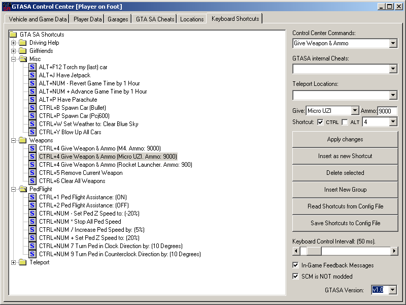
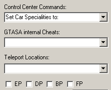
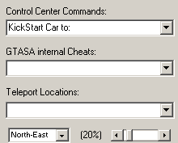
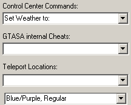

The Keyboard shortcuts, aka. Remote-Control page helps you to assign keyboard shortcuts to any of the more than 120 console-commands, GTA SA internal cheats (as defined in the relevant tab) and the teleport locations (also defined in the relevant tab).
You can assign the same key to several commands to enable the consequtive execution of a series of commands with one key.
The main part of this tab is the treeview to help you organize your shortcuts in freely-definable folders. The usage of this treeview is also similar to other treeviews, with context menu's to edit labels, move shortcuts to other folders and activate/deactivate a given shortcut. You can also activate / deactivate all items within a folder if you select the relevant menu item from the folder context menu on the treeview.
You can use one of the three main category selection combo's to start generating a new shortcut. If you drop the 'GTASA Internal Cheats' combo, you will see all of the cheats that are listed on the relevant tab of the control center in alphabetical order. You can edit the labels on the cheats tab to alter the sort order on the cheat selection combo. The location selection combo also works in the same manner. The console command selection combo however has been getting new entries with each update to the control center, and in order to preserve backwards compatibility to previous versions, and the shortcut selections of the users, this list is not sorted in any way.
For each console command, there are 19 different types of additional settings, that gets visible as you select an item from the command combo. If a console command needs no additional data, or you have selected a teleport location or a gta sa internal cheat, you will see the label 'No Additional Data is needed' at this location. Please see next section for detailed descriptions of each console command and selectable additional values.
After you have selected the command/cheat/location, you can select one of the keys from the drop-down combo. This list has only standard keys, to assure the stability of the control center between highly diversified keyboard layouts. You can also check one of the 'CTRL' or 'ALT' checkboxes as well. You cannot however select 'CTRL' and 'ALT' at the same time, again, for the stability of the control center.
The keyboard shortcuts are read without setting a global keyboard hook in order to increase Operating System stability. MS Windows is not always happy with a program hooking keyboard of another program, or a global keyboard hook. After you have selected your command and the key to assign it to, you can click on 'apply changes' to apply this selection to the selected treeview element on the treeview, or click on 'insert as a new shortcut' to insert a new element into the active folder with these settings. The new element will have your command and key selection as label. You can however edit this label to your own needs.
The Keyboard Control Interval slider is for you to select how often the keystrokes should get checked during gameplay. This affects your overall PC performance. (A keyboard hook has lower than 1 ms control interval). If you set this to a high value, the control center can be too slow to react to your keys, and if set to very low value, the pressed keys might trigger the same command several times, making the toggle commands harder to use within game play.
The keyboard will be checked only if GTA SA has the full focus in order to save system resources. This setting also alters the way the flight assistance works. If you set the control interval too low, you might need to decrease the flight assistance level to have proper freezing on air.
As you use console commands assigned to keys during gameplay, you can receive an in-game feedback if you check the 'In-Game Feedback Messages' checkbox.
The 'is SCM Original' is for you to decide if SCM relevant commands and sliders should work or not. As discussed before, with a modded scm, these commands might work, but if they do not, they will most probably damage your ongoing game process.
The GTA SA Version selection combo is to select between the different versions of GTA. Currently, the original dvd version 1.0 and the german update to v1.1 is supported. Please restart the control center after changing the version to ensure proper operation.
| Car Specs. Additional Data | Kickstart Additional Data | Set Weather Additional Data |
|  |  |  |